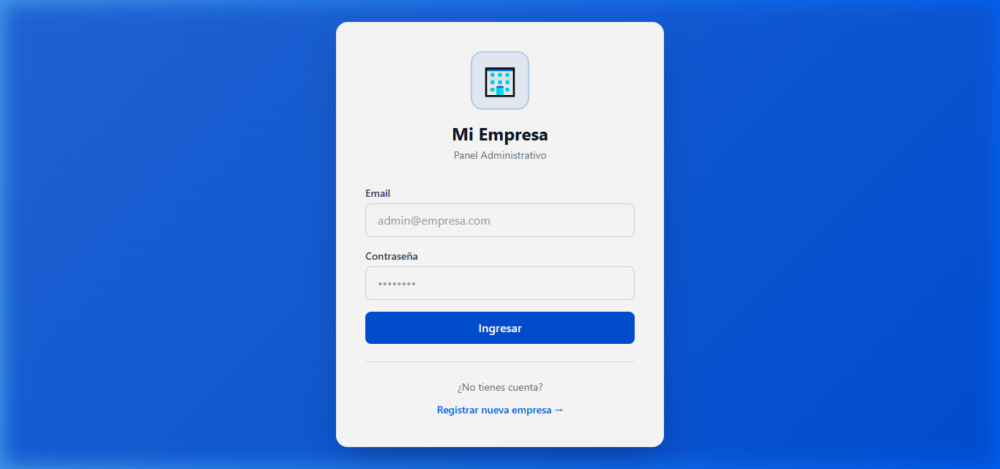
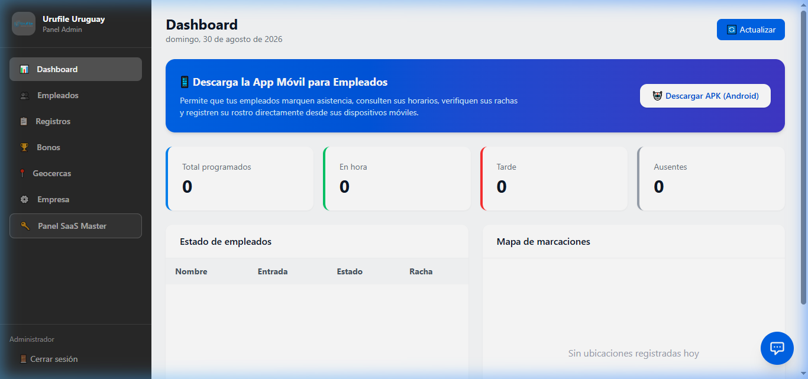
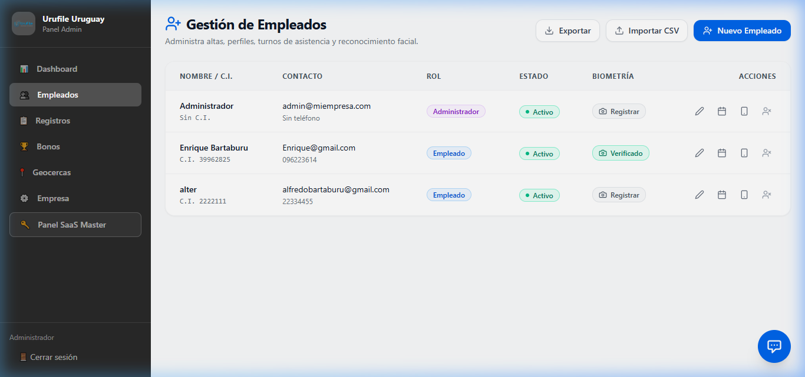
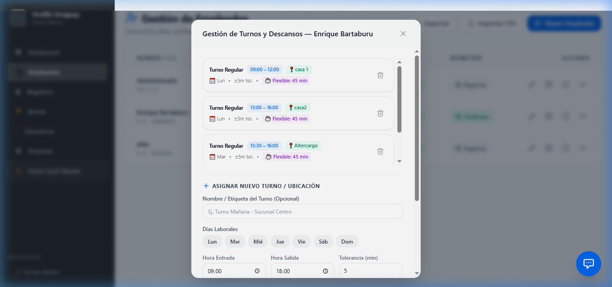
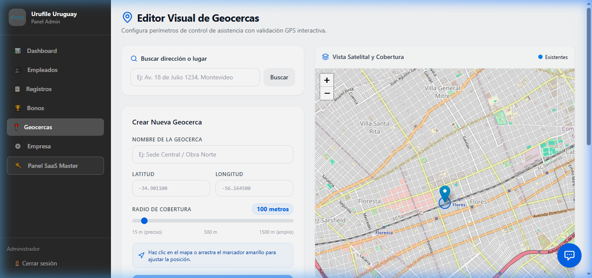
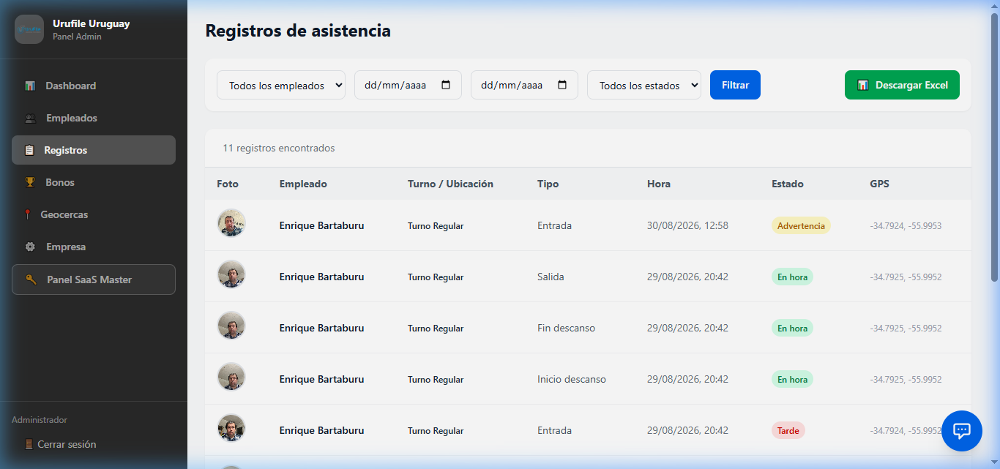

Control de Asistencia Inteligente
Esta plataforma SaaS permite a empresas gestionar de forma centralizada la puntualidad, horarios, geocercas y marcas biométricas de sus colaboradores mediante Inteligencia Artificial.
Este manual está diseñado de forma no técnica para administradores de personal, personal de recursos humanos y directores de sucursales que operan el sistema diariamente.
Control Seguro
Geolocalización GPS exacta combinada con biometría facial para evitar suplantaciones.
Gestión Ágil
Asignación de turnos semanales, tolerancias y descansos con pocos clics.
Métricas Clave
Estadísticas automatizadas de puntualidad, faltas y rachas positivas.
🔑 Cómo Iniciar Sesión
Para ingresar al sistema de administración, acceda al portal web oficial utilizando cualquier navegador moderno (se recomienda Google Chrome, Edge o Safari).
Si es su primer acceso o está en periodo de prueba, utilice las credenciales preconfiguradas:
Email: admin@miempresa.com
Contraseña: admin123

📊 El Panel de Control (Dashboard)
Al acceder con sus credenciales, la primera pantalla que visualizará es el Dashboard. Es el centro operativo y resumen ejecutivo diario de la empresa.
Indicadores clave:
- Métricas de Cabecera: Visualice rápidamente el total de empleados activos, el porcentaje promedio de puntualidad mensual de toda la empresa y el número acumulado de llegadas tarde.
- Estado en Tiempo Real: El panel muestra dinámicamente quiénes están trabajando en este instante, quiénes están ausentes (sin registrar entrada aún) y quiénes están en descanso.

👤 Gestión de Empleados
En el menú lateral o superior, ingrese a la sección de **Empleados**. Aquí se listan todos los colaboradores registrados en el sistema, mostrando su información de contacto, rol y estado biométrico.
+ Nuevo Empleado: Crea un perfil individual asignándole nombre, cédula de identidad (C.I.), teléfono, dirección, correo electrónico y clave inicial.
Importar CSV: Herramienta masiva para registrar decenas de empleados de una sola vez subiendo un archivo CSV.

⏰ Horarios y Descansos
La correcta configuración de los horarios individuales asegura que el sistema calcule con exactitud las llegadas tarde y registre las horas trabajadas.
Asignar Turno de Trabajo
Presione el botón de calendario 📅 de la fila del empleado. En el modal emergente, elija los días laborables (Lun a Dom) y defina la hora exacta de Entrada y de Salida.
Tolerancia en Minutos
Configure el margen de gracia en minutos (por ejemplo, 5 o 10 minutos). Si un empleado marca posterior a ese límite, el registro figurará automáticamente marcado como retraso.
Reglas de Descanso (Almuerzo)
Defina si la jornada cuenta con descanso:
• Flexible: Indique una cantidad de minutos (ej. 45 min) para tomar en cualquier momento del turno.
• Fijo: Rango horario exacto de pausa obligatorio (ej. 13:00 a 14:00).

📍 Zonas de Marcación (Geocercas)
Las geocercas definen las coordenadas geográficas autorizadas donde un empleado puede registrar sus fichajes desde su dispositivo móvil.
Cuando asocia un horario de un empleado a una sucursal específica (geocerca), la aplicación móvil no le permitirá marcar asistencia si no se encuentra dentro del rango de metros definido para esa ubicación.

📅 Historial de Asistencia (Registros)
Esta sección almacena toda la actividad de marcación de la empresa. Ideal para auditorías, revisiones de fin de mes y resolución de disputas de horarios.
Elementos de Auditoría:
- Foto de Marcado: Selfie obligatoria que el empleado se toma en vivo al pulsar el botón en la app móvil.
- Ubicación en Mapa: Coordenada exacta GPS mapeada al instante del marcado.
- Estado Biométrico: Indica si el sistema de inteligencia artificial confirmó la correspondencia del rostro del empleado con su foto de referencia.

🤖 Registro Biométrico (Rostro)
Para activar la verificación automática por IA, el administrador debe cargar la foto frontal de referencia de cada colaborador.
1. Ingrese a Empleados, localice la columna Biometría y haga clic en Registrar.
2. Cargue una foto frontal de su cara con iluminación uniforme.
3. Evite anteojos de sol, tapabocas o gorros que cubran rasgos esenciales.
4. Guarde el registro. A partir de ese momento, la app móvil comparará la selfie diaria con esta plantilla.